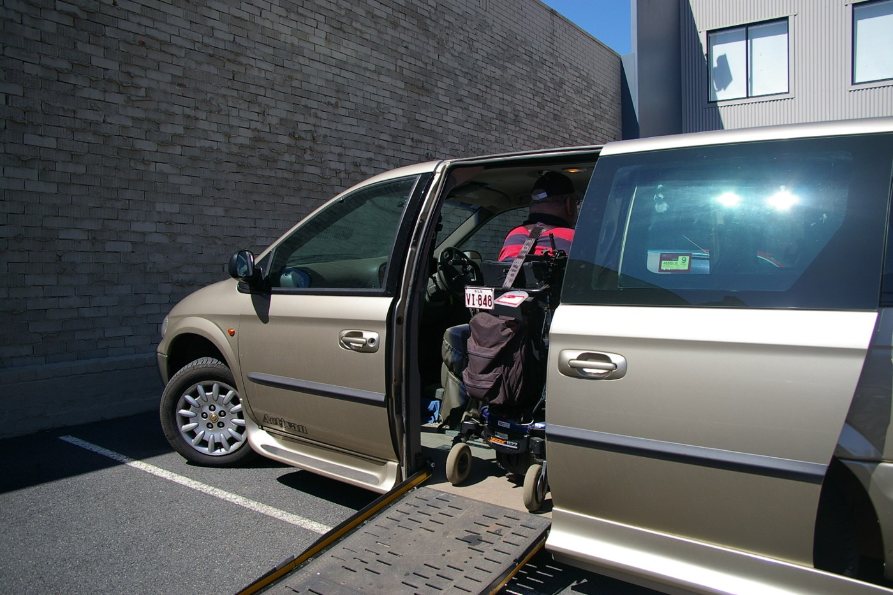
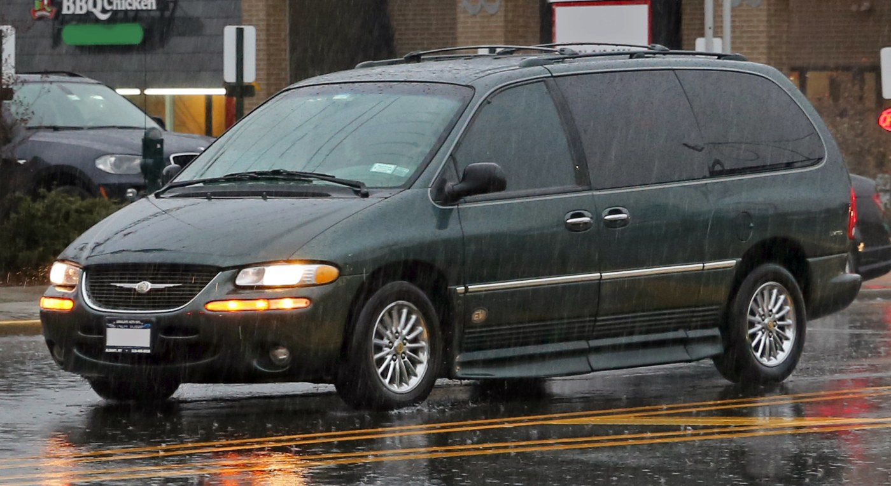
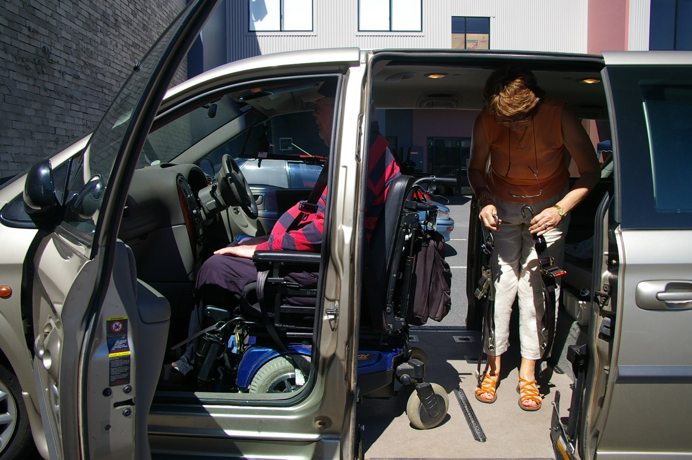

Wheelchair taxi rides
Get to shops, meet friends, or enjoy a day out. Discuss boarding support and space for your mobility device.
Plan a local rideYOUR JOURNEY. YOUR INDEPENDENCE.
From everyday errands to important appointments, plan a wheelchair-accessible journey with your comfort in mind.
Call: (503) 555-0148

LET’S PLAN YOUR JOURNEY
Share the essentials. Confirm your vehicle and boarding needs with the team.
FOR THE PLACES THAT MATTER
Travel for your plans, your people, and your peace of mind.
Get to shops, meet friends, or enjoy a day out. Discuss boarding support and space for your mobility device.
Plan a local ridePlan your trip to a clinic, therapy session, or routine appointment. Ask about return and recurring journeys.
Plan an appointment rideShare your travel time, wheelchair needs, and luggage details so a suitable vehicle can be discussed.
Plan a transferA CLOSER LOOK AT ACCESSIBILITY
Confirm the vehicle, boarding equipment, and wheelchair fit before your journey.


Discuss the equipment that suits your wheelchair or scooter.
Ask about restraints and the vehicle’s compatibility.
Confirm seating, luggage space, and boarding assistance together.
Illustrative vehicle photographs. Actual fleet and specifications must be confirmed.
PEOPLE FIRST. ALWAYS.
Kindride is built around a simple idea: your journey should support your independence.
Talk about your travel needsTell the team what help you prefer, and what you’d like to do independently.
Ask about driver training in accessibility, boarding assistance, and wheelchair securement.
Confirm pickup arrangements, waiting time, and your return journey before travel.
Request current licensing and insurance information before confirming your journey.
A SIMPLE START
Tell us where you’re going, when, and who’s coming with you.
Discuss wheelchair fit, boarding equipment, assistance.
After the provider confirms your ride,pickup details.
CLOSER TO YOUR COMMUNITY
Contact the provider to confirm whether your pickup and destination are covered.
Appointments, errands, airport journeys, or a visit with family. Start with your address and we’ll take it from there.
Check your journeySMALL JOURNEYS. BIG DIFFERENCES.
Being able to discuss my boarding needs ahead of time made planning a day out feel much easier.
I liked having a clear conversation about my mother’s appointment, her wheelchair, and the return trip.
Checking the vehicle and space for my companion helped me feel prepared for the journey.
GOOD TO KNOW
Need to discuss something specific? A conversation can help.
Call (503) 555-0148This depends on your mobility device and the assigned vehicle. Confirm dimensions, weight limits, seating arrangements, and securement compatibility with the provider before booking.
Choose a ramp, lift, or “Not sure” in the request form. The provider must confirm the available equipment and suitability before accepting a ride.
Include every traveler in your passenger count. The provider will confirm available seating and any luggage requirements.
Request as early as you can, especially for appointments and airport travel. Availability must be confirmed; same-day service is not guaranteed.
Discuss your dates, return journeys, and accessibility needs with the provider. Recurring schedules and pricing require a separate agreement.
YOUR NEXT JOURNEY STARTS HERE